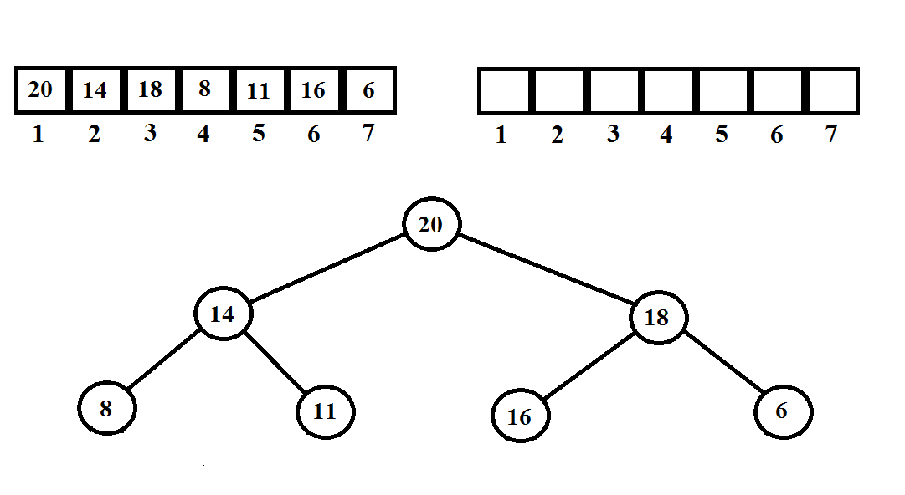

Sortowanie przez kopcowanie
Jeśli usuniemy teraz wszystkie wartości, a otrzymane wartości dodamy do tablicy,
zostanie ona posortowana od największej do najmniejszej wartości. Jeśli to samo zrobimy
z kopcem minimalnym tablica będzie posortowana od najmniejszej do największej wartości.
